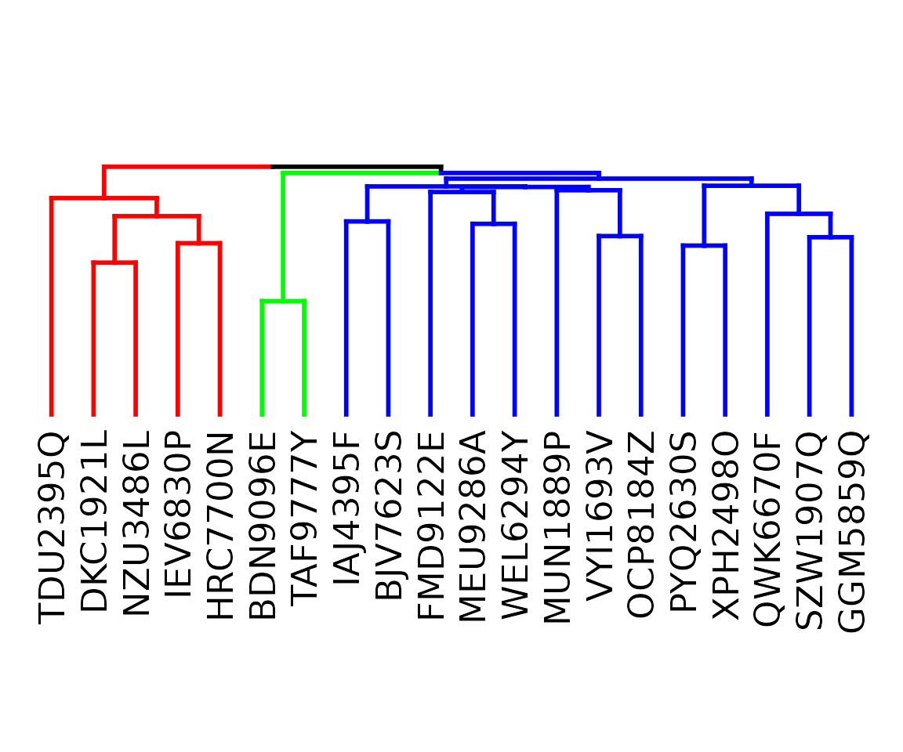

The ConsortiumMetabolismSet Class
Source:vignettes/ConsortiumMetabolismSet.Rmd
ConsortiumMetabolismSet.RmdIntroduction
The ConsortiumMetabolismSet (CMS) class groups multiple
ConsortiumMetabolism objects into a single analysis unit.
When a CMS is constructed, ramen automatically:
- Expands all binary matrices to a shared universal metabolite space
- Computes pairwise overlap scores (Functional Overlap Score) between every pair of consortia
- Builds a dendrogram via hierarchical clustering on the dissimilarity matrix (1 - overlap)
This vignette covers CMS construction, accessors, the overlap matrix, dendrogram operations, species and pathway classification, and cluster extraction.
Construction
From a list of CMs
The ConsortiumMetabolismSet() constructor accepts any
number of ConsortiumMetabolism objects (or a list of them),
plus a name.
cm_alpha <- synCM("Alpha", n_species = 5, max_met = 10, seed = 42)
cm_beta <- synCM("Beta", n_species = 5, max_met = 10, seed = 43)
cm_gamma <- synCM("Gamma", n_species = 4, max_met = 8, seed = 44)
cm_delta <- synCM("Delta", n_species = 6, max_met = 10, seed = 45)
cms_syn <- ConsortiumMetabolismSet(
cm_alpha, cm_beta, cm_gamma, cm_delta,
name = "SyntheticSet"
)
cms_synA list of CMs works equally well:
cm_list <- list(cm_alpha, cm_beta)
cms_small <- ConsortiumMetabolismSet(
cm_list,
name = "SmallSet"
)
cms_smallFrom MiSoSoup data
The misosoup24 dataset contains 56 metabolic solutions.
Here we construct CMs from the first four and combine them into a
CMS.
data("misosoup24")
## Build 4 CMs from the dataset
cm_ms <- lapply(seq_len(4), function(i) {
ConsortiumMetabolism(
misosoup24[[i]],
name = names(misosoup24)[i],
species_col = "species",
metabolite_col = "metabolites",
flux_col = "fluxes"
)
})
cms_ms <- ConsortiumMetabolismSet(
cm_ms,
name = "MiSoSoup_subset"
)
cms_msThe show() method
Printing a CMS displays the name, the number of consortia, and the description.
cms_syn
#>
#> ── ConsortiumMetabolismSet
#> Name: "SyntheticSet"
#> Containing 4 consortia.
#> Description: NAAccessors
name() and description()
name(cms_syn)
#> [1] "SyntheticSet"
description(cms_syn)
#> [1] NA
species()
For a CMS, species() returns a tibble of all species
across consortia with the number of distinct pathways each species
catalyses, sorted in descending order.
species(cms_syn)
#> # A tibble: 20 × 2
#> species n_pathways
#> <chr> <int>
#> 1 HRC7700N 21
#> 2 IEV6830P 20
#> 3 DKC1921L 20
#> 4 QWK6670F 18
#> 5 TDU2395Q 16
#> 6 NZU3486L 15
#> 7 SZW1907Q 12
#> 8 IAJ4395F 12
#> 9 PYQ2630S 10
#> 10 GGM5859Q 9
#> 11 MEU9286A 6
#> 12 FMD9122E 6
#> 13 VYI1693V 4
#> 14 XPH2498O 4
#> 15 BJV7623S 3
#> 16 WEL6294Y 2
#> 17 BDN9096E 2
#> 18 OCP8184Z 2
#> 19 MUN1889P 1
#> 20 TAF9777Y 1
metabolites()
Returns a sorted character vector of all metabolites across the universal metabolite space.
metabolites(cms_syn)
#> [1] "met1" "met10" "met2" "met3" "met4" "met5" "met6" "met7" "met8"
#> [10] "met9"
pathways()
Returns pathway information across all consortia. The
type argument filters to specific subsets.
## All pathways with consortium counts
pw <- pathways(cms_syn)
head(pw)
#> # A tibble: 6 × 5
#> consumed produced c_ind_alig p_ind_alig n_cons
#> <chr> <chr> <int> <int> <int>
#> 1 met7 met2 8 3 4
#> 2 met1 met5 1 6 4
#> 3 met1 met2 1 3 4
#> 4 met1 met8 1 9 4
#> 5 met8 met4 9 5 3
#> 6 met8 met5 9 6 3Overlap matrix
The overlap matrix stores pairwise dissimilarity scores (1 - Functional Overlap Score) between all consortia. The FOS is the Szymkiewicz-Simpson coefficient applied to the binary metabolite-metabolite matrices.
cms_syn@OverlapMatrix
#> Alpha Beta Gamma Delta
#> Alpha 0.0000000 0.5526316 0.4444444 0.4615385
#> Beta 0.5526316 0.0000000 0.5185185 0.4736842
#> Gamma 0.4444444 0.5185185 0.0000000 0.5185185
#> Delta 0.4615385 0.4736842 0.5185185 0.0000000Values near 0 on the diagonal indicate self-identity; off-diagonal values close to 0 mean high similarity.
Dendrogram
The dendrogram is built from the overlap (dissimilarity) matrix using
hierarchical clustering and is stored in the Dendrogram
slot.
dend <- cms_syn@Dendrogram[[1]]
plot(dend, main = "Consortium dendrogram")The NodeData slot contains the positions of internal
dendrogram nodes, which are used by extractCluster() and
plot().
cms_syn@NodeData
#> # A tibble: 3 × 4
#> x y original_node_id node_id
#> <dbl> <dbl> <int> <int>
#> 1 2.5 0.785 1 1
#> 2 3.5 0.676 5 2
#> 3 1.5 0.632 2 3Pathway classification
The pathways() method with a type argument
classifies pathways by prevalence across consortia or species.
Pan-consortia pathways
Pathways present in many consortia (top fraction).
pathways(cms_syn, type = "pan-cons")
#> # A tibble: 4 × 5
#> consumed produced c_ind_alig p_ind_alig n_cons
#> <chr> <chr> <int> <int> <int>
#> 1 met7 met2 8 3 4
#> 2 met1 met5 1 6 4
#> 3 met1 met2 1 3 4
#> 4 met1 met8 1 9 4Niche pathways
Pathways present in few consortia (bottom fraction).
pathways(cms_syn, type = "niche")
#> # A tibble: 32 × 5
#> consumed produced c_ind_alig p_ind_alig n_cons
#> <chr> <chr> <int> <int> <int>
#> 1 met2 met1 3 1 1
#> 2 met2 met7 3 8 1
#> 3 met2 met4 3 5 1
#> 4 met8 met1 9 1 1
#> 5 met4 met5 5 6 1
#> 6 met10 met4 2 5 1
#> 7 met10 met6 2 7 1
#> 8 met10 met2 2 3 1
#> 9 met10 met5 2 6 1
#> 10 met10 met1 2 1 1
#> # ℹ 22 more rowsCore pathways
Pathways catalysed by many species (top fraction).
pathways(cms_syn, type = "core")
#> # A tibble: 0 × 5
#> # ℹ 5 variables: consumed <chr>, produced <chr>, c_ind_alig <int>,
#> # p_ind_alig <int>, n_species <int>Auxiliary pathways
Pathways catalysed by few species (bottom fraction).
pathways(cms_syn, type = "aux")
#> # A tibble: 46 × 5
#> consumed produced c_ind_alig p_ind_alig n_species
#> <chr> <chr> <int> <int> <int>
#> 1 met2 met1 3 1 1
#> 2 met2 met7 3 8 1
#> 3 met2 met4 3 5 1
#> 4 met8 met1 9 1 1
#> 5 met4 met5 5 6 1
#> 6 met10 met4 2 5 1
#> 7 met10 met6 2 7 1
#> 8 met10 met2 2 3 1
#> 9 met10 met5 2 6 1
#> 10 met10 met1 2 1 1
#> # ℹ 36 more rowsThe quantileCutoff parameter controls the threshold
(default 0.1).
Species classification
The species() method for CMS supports filtering by
metabolic role.
Generalists
Species with the most distinct pathways (top 15% by default).
species(cms_syn, type = "generalists")
#> # A tibble: 3 × 2
#> species n_pathways
#> <chr> <int>
#> 1 HRC7700N 21
#> 2 IEV6830P 20
#> 3 DKC1921L 20Specialists
Species with the fewest distinct pathways (bottom 15% by default).
species(cms_syn, type = "specialists")
#> # A tibble: 3 × 2
#> species n_pathways
#> <chr> <int>
#> 1 OCP8184Z 2
#> 2 MUN1889P 1
#> 3 TAF9777Y 1The quantileCutoff parameter adjusts the fraction:
species(cms_syn, type = "generalists", quantileCutoff = 0.25)
#> # A tibble: 5 × 2
#> species n_pathways
#> <chr> <int>
#> 1 HRC7700N 21
#> 2 IEV6830P 20
#> 3 DKC1921L 20
#> 4 QWK6670F 18
#> 5 TDU2395Q 16Functional groups
functionalGroups() computes pairwise Jaccard
similarities between species based on their pathway sets, performs
hierarchical clustering, and returns a dendrogram coloured by
k groups.
fg <- functionalGroups(cms_syn, k = 3)
#> Loading required namespace: colorspace
#> Warning: Using `size` aesthetic for lines was deprecated in ggplot2 3.4.0.
#> ℹ Please use `linewidth` instead.
#> ℹ The deprecated feature was likely used in the dendextend package.
#> Please report the issue at <https://github.com/talgalili/dendextend/issues>.
#> This warning is displayed once per session.
#> Call `lifecycle::last_lifecycle_warnings()` to see where this warning was
#> generated.
Functional groups dendrogram.
The returned list (invisible) contains the plot, dendrogram, similarity matrix, species combinations, and per-species reaction sets:
names(fg)
#> [1] "plot" "dendrogram" "similarity_matrix"
#> [4] "species_combinations" "reactions_per_species"Cluster extraction
Given the numbered internal nodes visible in plot(cms)
or NodeData, extractCluster() pulls out a
sub-CMS containing only the consortia under a given node.
sub_cms <- extractCluster(cms_syn, node_id = 1)
sub_cmsReplacement methods
description<-
description(cms_syn) <- "Four synthetic consortia"
description(cms_syn)
#> [1] "Four synthetic consortia"Session info
sessionInfo()
#> R version 4.5.3 (2026-03-11)
#> Platform: x86_64-pc-linux-gnu
#> Running under: Ubuntu 24.04.4 LTS
#>
#> Matrix products: default
#> BLAS: /usr/lib/x86_64-linux-gnu/openblas-pthread/libblas.so.3
#> LAPACK: /usr/lib/x86_64-linux-gnu/openblas-pthread/libopenblasp-r0.3.26.so; LAPACK version 3.12.0
#>
#> locale:
#> [1] LC_CTYPE=C.UTF-8 LC_NUMERIC=C LC_TIME=C.UTF-8
#> [4] LC_COLLATE=C.UTF-8 LC_MONETARY=C.UTF-8 LC_MESSAGES=C.UTF-8
#> [7] LC_PAPER=C.UTF-8 LC_NAME=C LC_ADDRESS=C
#> [10] LC_TELEPHONE=C LC_MEASUREMENT=C.UTF-8 LC_IDENTIFICATION=C
#>
#> time zone: UTC
#> tzcode source: system (glibc)
#>
#> attached base packages:
#> [1] stats graphics grDevices utils datasets methods base
#>
#> other attached packages:
#> [1] ramen_0.0.0.9001 BiocStyle_2.38.0
#>
#> loaded via a namespace (and not attached):
#> [1] SummarizedExperiment_1.40.0 gtable_0.3.6
#> [3] ggplot2_4.0.2 xfun_0.57
#> [5] bslib_0.10.0 Biobase_2.70.0
#> [7] lattice_0.22-9 yulab.utils_0.2.4
#> [9] vctrs_0.7.2 tools_4.5.3
#> [11] generics_0.1.4 stats4_4.5.3
#> [13] parallel_4.5.3 tibble_3.3.1
#> [15] pkgconfig_2.0.3 Matrix_1.7-4
#> [17] RColorBrewer_1.1-3 S7_0.2.1
#> [19] desc_1.4.3 S4Vectors_0.48.0
#> [21] lifecycle_1.0.5 farver_2.1.2
#> [23] compiler_4.5.3 treeio_1.34.0
#> [25] textshaping_1.0.5 Biostrings_2.78.0
#> [27] Seqinfo_1.0.0 codetools_0.2-20
#> [29] htmltools_0.5.9 sass_0.4.10
#> [31] yaml_2.3.12 lazyeval_0.2.2
#> [33] pkgdown_2.2.0 pillar_1.11.1
#> [35] crayon_1.5.3 jquerylib_0.1.4
#> [37] tidyr_1.3.2 BiocParallel_1.44.0
#> [39] SingleCellExperiment_1.32.0 DelayedArray_0.36.0
#> [41] cachem_1.1.0 viridis_0.6.5
#> [43] abind_1.4-8 nlme_3.1-168
#> [45] tidyselect_1.2.1 digest_0.6.39
#> [47] dplyr_1.2.0 purrr_1.2.1
#> [49] bookdown_0.46 labeling_0.4.3
#> [51] TreeSummarizedExperiment_2.18.0 fastmap_1.2.0
#> [53] grid_4.5.3 cli_3.6.5
#> [55] SparseArray_1.10.9 magrittr_2.0.4
#> [57] S4Arrays_1.10.1 utf8_1.2.6
#> [59] ape_5.8-1 withr_3.0.2
#> [61] scales_1.4.0 rappdirs_0.3.4
#> [63] rmarkdown_2.30 XVector_0.50.0
#> [65] matrixStats_1.5.0 igraph_2.2.2
#> [67] gridExtra_2.3 ragg_1.5.2
#> [69] evaluate_1.0.5 knitr_1.51
#> [71] GenomicRanges_1.62.1 IRanges_2.44.0
#> [73] viridisLite_0.4.3 rlang_1.1.7
#> [75] dendextend_1.19.1 Rcpp_1.1.1
#> [77] glue_1.8.0 tidytree_0.4.7
#> [79] BiocManager_1.30.27 BiocGenerics_0.56.0
#> [81] jsonlite_2.0.0 R6_2.6.1
#> [83] MatrixGenerics_1.22.0 systemfonts_1.3.2
#> [85] fs_2.0.1